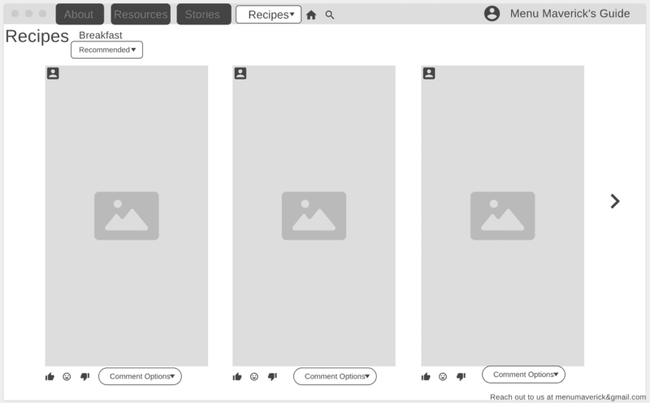
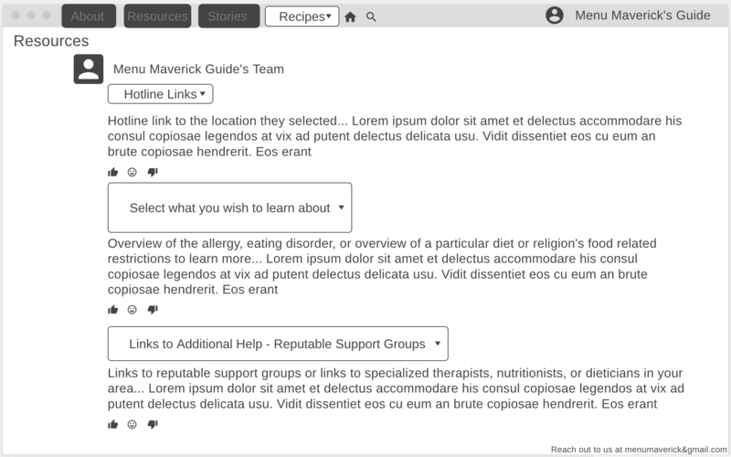
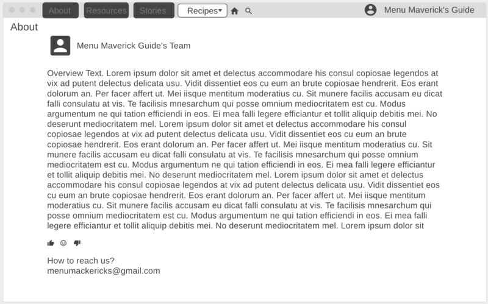

| Advantages | Disadvantages | |
|---|---|---|
| Sketching Wireframes: | Easy and accessible way to simply get quick thoughts out onto a visual format |
|
| Wireframe Software: | Provides more of an advanced solution for wireframing, thus giving more of a focused product | Requires the designer to lay out more focused thoughts, rather than the utilization of simply jotting down quick thoughts |
I personally would choose to create an annotated wireframe due to my copious amounts of ideas for all of the differing directions which my project could flow in. For my perspective, the idea of being able to create a basic wireframe, but taking it to a level above with the utilization of annotations to aid with the specifics of how the user can interact with different parts, would aid significantly in feeling like more a 2D easy-to-follow along visual that’s surface level enough to lay out a clear plan for me to follow along in the creation process, but detailed enough to address the specifics ahead of time before the prototype. However, later on after creating the annotated wireframe, I may decide to create it in more of the format of a slight userflow inclusion if I determine it as needed. Although, it is crucial to note that this step will only be when I am actually creating the actual prototype itself as a way to simply expand upon my base visualization from the original mental-clarity giving annotated wireframe design.
There was no option that I could find to add annotations onto the images themselves. Annotations: The recipe dropdown will have options such as: Breakfast, Lunch, Dinner, Snacks, Drinks, and Desserts
There was no option that I could find to add annotations onto the images themselves. Annotations: The dropdown that has "recommended" currently selected will also have the options of "What's new" and "Previously Liked" so that users can have more of a targeted view. Additionally, there will be a restriction on allowing users to freely comment whatever they would like for safety and comfort of the general community reasons so there will be a dropdown for comments with a variety of options availible for users to pick through if they wish to comment as well as react with icons.
There was no option that I could find to add annotations onto the images themselves. Annotations: The hotline links dropdown will have the options to select the user's general location then from there, it gives a detailed overview of each hotline link. The "select what you wish to learn about" dropdown will have options of different eating disorders, allergies, or dietary restrictions for users to choose from then they will get an overview about that in the text box.The "links to additional help" dropdown will have links for the user to first select their general location, then it will provide results of support groups for more targeted aid or also professionals such as therapists, dietitians, and nutritionists.
